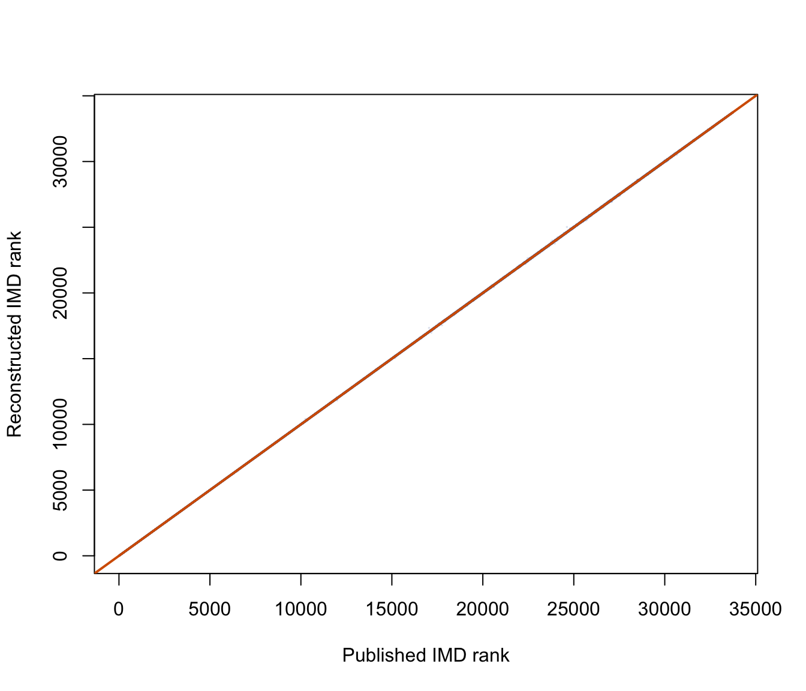

library(COINr)
library(dplyr)
library(readxl)Reconstructing the English Indices of Deprivation 2025 with COINr
A reproducible LSOA-level walkthrough of the IMD 2025 transformations, hierarchy and aggregation
1 Aim and scope
The English Index of Multiple Deprivation 2025 (IMD 2025) combines seven domains of deprivation for 33,755 Lower-layer Super Output Areas (LSOAs) in England. This walkthrough reconstructs the index with {COINr}, an R package for building and analysing composite indicators.
The official method has three broad stages:
- combine indicators into domain or sub-domain scores;
- rank each domain and map those ranks to a common exponential distribution; and
- combine the seven transformed domains using the official domain weights.
The IMD 2025 Technical Report describes the method in detail. The source workbooks are available from the English indices of deprivation 2025 release page.
This is a public-data reconstruction, not a fully independent replication
A completely independent reconstruction is not possible from the released data. The Income and Employment domains require shrinkage inputs that are not all published. Four pupil-derived indicators in the Children and Young People education sub-domain are also withheld because they derive from pupil microdata.
We therefore use the published Income and Employment domain scores, and the published Children and Young People sub-domain score, at the points where the public data run out. Health, Crime, Barriers to Housing and Services, Living Environment, the final exponential transformation, and the final IMD aggregation are reconstructed from released inputs.
2 Packages and source files
We need only three R packages. {COINr} manages the composite-indicator objects, metadata, normalisation and aggregation. {dplyr} handles data manipulation, and {readxl} reads the official workbooks.
The reconstruction uses three official files:
- File 7, containing published scores, ranks, deciles and population denominators;
- File 8, containing the released underlying indicators; and
- File 9, containing exponentially transformed domain scores for final-stage validation.
The code below downloads a file only when it is not already present. Set the IMD2025_DATA_DIR environment variable to use a persistent local directory. Otherwise, the files are stored in a temporary directory for the current R session.
data_dir <- Sys.getenv(
"IMD2025_DATA_DIR",
unset = file.path(tempdir(), "imd2025")
)
dir.create(data_dir, recursive = TRUE, showWarnings = FALSE)
source_urls <- c(
all_results = paste0(
"https://assets.publishing.service.gov.uk/media/691ded56d140bbbaa59a2a7d/",
"File_7_IoD2025_All_Ranks_Scores_Deciles_Population_Denominators.csv"
),
indicators = paste0(
"https://assets.publishing.service.gov.uk/media/691dec012c6b98ecdbc500d4/",
"File_8_IoD2025_Underlying_Indicators.xlsx"
),
transformed_domains = paste0(
"https://assets.publishing.service.gov.uk/media/691ded670dcbf6343e9a2a6c/",
"File_9_IoD2025_Transformed_Domain_Scores.xlsx"
)
)
source_paths <- file.path(data_dir, basename(source_urls))
names(source_paths) <- names(source_urls)
for (source_name in names(source_urls)) {
if (!file.exists(source_paths[[source_name]])) {
download.file(
source_urls[[source_name]],
source_paths[[source_name]],
mode = "wb",
quiet = TRUE
)
}
}
For an offline package vignette
Package checks should not depend on live downloads. Before adding this file to {IMD}, either turn Files 7–9 into documented package data objects or place them under inst/extdata/imd2025/. The three paths above can then be replaced with system.file() calls. See Package integration at the end.
3 Translate the official transformations into R
3.1 Rank-based normal scores
Most indicators are measured in different units. Before they are combined, the official method ranks each indicator and converts its rank to a standard normal score:
\[ z_i = \Phi^{-1}\left(\frac{r_i - 0.5}{N}\right), \]
where \(r_i\) is the indicator rank, \(N\) is the number of observed LSOAs, and \(\Phi^{-1}\) is the standard normal quantile function. Average ranks are used for ties.
imd_rank_normal <- function(x) {
out <- rep(NA_real_, length(x))
observed <- !is.na(x)
n <- sum(observed)
out[observed] <- qnorm(
(rank(x[observed], ties.method = "average") - 0.5) / n
)
out
}This function satisfies the requirements for a custom COINr::Normalise() function: it takes a numeric vector and returns a numeric vector of the same length.
3.2 Exponential transformation
Before domains or sub-domains are combined, the official method often maps their ranks to a common exponential distribution:
\[ X = -23\ln\left[1-R\left(1-e^{-100/23}\right)\right], \]
where \(R\) is the fractional rank, running from \(1/N\) for the least deprived LSOA to 1 for the most deprived. The result ranges from approximately 0 to 100 and deliberately spreads out the deprived end of the distribution.
imd_rank_exponential <- function(x, constant = 23) {
out <- rep(NA_real_, length(x))
observed <- !is.na(x)
n <- sum(observed)
rank_fraction <-
rank(x[observed], ties.method = "average") / n
out[observed] <- -constant *
log(
1 - rank_fraction * (1 - exp(-100 / constant))
)
out
}3.3 A weighted sum that preserves the published scale
The seven published domain weights sum to 0.999 rather than 1 because the three smallest weights are displayed as 9.3%. The released IMD score applies these displayed weights directly. COINr::a_amean() divides by the sum of the weights, so we use a small custom aggregation function to reproduce the published score scale exactly.
imd_weighted_sum <- function(x, w) {
if (anyNA(x)) {
return(NA_real_)
}
sum(x * w)
}This distinction affects the score scale slightly but does not affect ranks.
4 A small COINr constructor
A COINr coin needs two tables:
iData, with one row per LSOA and one column per indicator; andiMeta, describing each indicator’s name, direction, weight and parent aggregate.
The helper below builds a two-level coin, optionally normalises its indicators, aggregates them, and returns both the coin and its aggregate score. Building separate coins for different stages is useful here because IMD applies different transformations at different points in its hierarchy.
meta <- function(iCode, iName, Direction = 1, Weight = 1) {
tibble(iCode, iName, Direction, Weight)
}
make_coin <- function(
iData,
indicator_meta,
aggregate_code,
aggregate_name,
normaliser = NULL
) {
stopifnot(
identical(names(iData)[1], "uCode"),
identical(names(iData)[-1], indicator_meta$iCode)
)
iMeta <- bind_rows(
indicator_meta |>
transmute(
Level = 1L,
iCode,
iName,
Parent = aggregate_code,
Direction,
Weight,
Type = "Indicator"
),
tibble(
Level = 2L,
iCode = aggregate_code,
iName = aggregate_name,
Parent = NA_character_,
Direction = 1,
Weight = 1,
Type = "Aggregate"
)
)
coin <- new_coin(
iData = iData,
iMeta = iMeta,
level_names = c("Indicator", "Aggregate"),
quietly = TRUE
)
dset <- "Raw"
if (!is.null(normaliser)) {
coin <- suppressMessages(Normalise(
coin,
dset = "Raw",
global_specs = list(f_n = normaliser)
))
dset <- "Normalised"
}
coin <- suppressMessages(Aggregate(
coin,
dset = dset,
f_ag = "imd_weighted_sum"
))
list(
coin = coin,
score = get_dset(coin, "Aggregated")[[aggregate_code]]
)
}COINr automatically handles direction. A direction of 1 means that higher values represent more deprivation; -1 means the reverse.
5 Read and align the official data
LSOA codes are the join key. We sort every input by code and stop if any sheet does not align with File 7. This avoids the silent row-order errors that are particularly dangerous when working with 33,755 observations.
official <- read.csv(
source_paths[["all_results"]],
check.names = FALSE
) |>
arrange(`LSOA code (2021)`)
uCode <- official$`LSOA code (2021)`
n_lsoa <- length(uCode)
read_indicator_sheet <- function(sheet) {
read_excel(source_paths[["indicators"]], sheet = sheet) |>
arrange(`LSOA code (2021)`)
}
assert_codes <- function(data, label) {
if (!identical(data$`LSOA code (2021)`, uCode)) {
stop(label, " LSOA codes do not align with File 7.")
}
invisible(data)
}
education <- assert_codes(
read_indicator_sheet("IoD25 Education Domain"),
"Education"
)
health <- assert_codes(
read_indicator_sheet("IoD25 Health Domain"),
"Health"
)
crime <- assert_codes(
read_indicator_sheet("IoD25 Crime Domain"),
"Crime"
)
barriers <- assert_codes(
read_indicator_sheet("IoD25 Barriers Domain"),
"Barriers"
)
living <- assert_codes(
read_indicator_sheet("IoD25 Living Env Domain"),
"Living Environment"
)
stopifnot(n_lsoa == 33755L)6 Estimate the factor-analysis weights
The official method uses one-factor maximum-likelihood factor analysis for the Health and Crime domains. We can estimate those weights directly from the released indicators rather than copying them from the Technical Report.
The procedure is:
- convert each indicator to the rank-based normal distribution defined above;
- fit a one-factor maximum-likelihood model with
stats::factanal()and no rotation; - orient the factor so that positive loadings mean more deprivation; and
- divide each loading by the sum of the loadings.
The final step turns the loadings into aggregation weights that sum to one. These are normalised factor loadings, not factor-score regression coefficients.
derive_factor_weights <- function(indicator_data) {
normal_scores <- as.data.frame(
lapply(indicator_data, imd_rank_normal)
)
fit <- factanal(
normal_scores,
factors = 1,
rotation = "none"
)
loadings <- unclass(fit$loadings)[, 1]
# A factor's sign is arbitrary. Orient it so that larger scores
# consistently represent more deprivation.
if (sum(loadings) < 0) {
loadings <- -loadings
}
if (any(loadings <= 0)) {
stop("The one-factor solution contains a non-positive loading.")
}
list(
weights = loadings / sum(loadings),
loadings = loadings,
fit = fit,
normal_scores = normal_scores
)
}Prepare the Health and Crime inputs in the same column order that will later be passed to COINr, then fit both models.
health_factor_data <- data.frame(
acute_morbidity = health$`Acute morbidity indicator`,
illness_disability =
health$`Comparative illness and disability ratio indicator`,
mental_health = health$`Mental health indicator`,
years_life_lost = health$`Years of potential life lost indicator`
)
crime_factor_data <- data.frame(
violence_injury =
crime$`Violence with injury, rate per 1,000 'at-risk population'`,
violence_no_injury =
crime$`Violence without injury, rate per 1,000 'at-risk population'`,
stalking_harassment =
crime$`Stalking and harassment, rate per 1,000 'at-risk population'`,
burglary = crime$`Burglary, rate per 1,000 'at-risk properties'`,
theft = crime$`Theft, rate per 1,000 'at-risk population'`,
criminal_damage =
crime$`Criminal damage, rate per 1,000 'at-risk population'`,
public_order_weapons =
crime$`Public order and Possession of weapons, rate per 1,000 'at-risk population'`,
antisocial_behaviour =
crime$`Anti-Social Behaviour, rate per 1,000 'at-risk population'`
)
health_factor <- derive_factor_weights(health_factor_data)
crime_factor <- derive_factor_weights(crime_factor_data)For verification only, compare the estimated weights with the rounded weights printed in the Technical Report. The reconstruction below uses the estimated values, not the published values.
factor_weight_comparison <- bind_rows(
tibble(
domain = "Health",
indicator = c(
"Acute morbidity",
"Comparative illness and disability ratio",
"Mental health",
"Years of potential life lost"
),
estimated_weight = unname(health_factor$weights),
published_weight = c(0.222, 0.294, 0.244, 0.240)
),
tibble(
domain = "Crime",
indicator = c(
"Violence with injury",
"Violence without injury",
"Stalking and harassment",
"Burglary",
"Theft",
"Criminal damage",
"Public order and weapons",
"Anti-social behaviour"
),
estimated_weight = unname(crime_factor$weights),
published_weight = c(
0.151, 0.154, 0.132, 0.074,
0.097, 0.144, 0.145, 0.103
)
)
) |>
mutate(difference = estimated_weight - published_weight)
knitr::kable(factor_weight_comparison, digits = 4)| domain | indicator | estimated_weight | published_weight | difference |
|---|---|---|---|---|
| Health | Acute morbidity | 0.2220 | 0.222 | 0e+00 |
| Health | Comparative illness and disability ratio | 0.2936 | 0.294 | -4e-04 |
| Health | Mental health | 0.2444 | 0.244 | 4e-04 |
| Health | Years of potential life lost | 0.2400 | 0.240 | 0e+00 |
| Crime | Violence with injury | 0.1510 | 0.151 | 0e+00 |
| Crime | Violence without injury | 0.1541 | 0.154 | 1e-04 |
| Crime | Stalking and harassment | 0.1323 | 0.132 | 3e-04 |
| Crime | Burglary | 0.0745 | 0.074 | 5e-04 |
| Crime | Theft | 0.0969 | 0.097 | -1e-04 |
| Crime | Criminal damage | 0.1436 | 0.144 | -4e-04 |
| Crime | Public order and weapons | 0.1449 | 0.145 | -1e-04 |
| Crime | Anti-social behaviour | 0.1028 | 0.103 | -2e-04 |
Every estimated weight rounds to the corresponding published three-decimal value. This independently reproduces the Health and Crime factor weights from File 8.
Two lower-level factor models cannot be regenerated from public data:
- the Children and Young People education sub-domain, because four of its five inputs are not released; and
- the Mental Health composite indicator, because File 8 publishes only the already-combined indicator rather than its four administrative-data components.
The factor analysis above therefore regenerates every set of factor weights for which all constituent indicators are public: the Health and Crime domain weights.
7 Reconstruct the domains
7.1 Education, Skills and Training
The Education domain has two equally weighted sub-domains:
- Children and Young People; and
- Adult Skills.
The Children and Young People sub-domain uses five indicators with factor-analysis weights. Only Entry to Higher Education is released; the four pupil-derived indicators are not. We therefore start from the published Children and Young People sub-domain score in File 7. The Adult Skills indicator is available in File 8.
Both sub-domains are exponentially transformed before being combined with equal weights.
education_coin <- make_coin(
data.frame(
uCode,
children_young_people = official$`Children and Young People Sub-domain Score`,
adult_skills = education$`Adult skills and English language proficiency indicator`
),
meta(
c("children_young_people", "adult_skills"),
c("Children and Young People", "Adult Skills"),
Weight = c(0.5, 0.5)
),
aggregate_code = "education",
aggregate_name = "Education, Skills and Training",
normaliser = "imd_rank_exponential"
)7.2 Health Deprivation and Disability
The four Health indicators are transformed to normal scores and combined using the weights estimated above.
health_coin <- make_coin(
data.frame(uCode, health_factor_data),
meta(
c(
"acute_morbidity",
"illness_disability",
"mental_health",
"years_life_lost"
),
c(
"Acute morbidity",
"Comparative illness and disability ratio",
"Mental health",
"Years of potential life lost"
),
Weight = unname(health_factor$weights)
),
aggregate_code = "health",
aggregate_name = "Health Deprivation and Disability",
normaliser = "imd_rank_normal"
)The weights add to one, so the weighted sum is also a weighted mean here.
7.3 Crime
Crime follows the same pattern: transform eight indicator ranks to normal scores, then combine them with the weights estimated from the one-factor model.
crime_coin <- make_coin(
data.frame(uCode, crime_factor_data),
meta(
c(
"violence_injury",
"violence_no_injury",
"stalking_harassment",
"burglary",
"theft",
"criminal_damage",
"public_order_weapons",
"antisocial_behaviour"
),
c(
"Violence with injury",
"Violence without injury",
"Stalking and harassment",
"Burglary",
"Theft",
"Criminal damage",
"Public order and weapons",
"Anti-social behaviour"
),
Weight = unname(crime_factor$weights)
),
aggregate_code = "crime",
aggregate_name = "Crime",
normaliser = "imd_rank_normal"
)7.4 Barriers to Housing and Services
Barriers is more hierarchical. We first construct two composite indicators:
- overcrowding, from rooms and bedrooms measures; and
- homelessness, from core and statutory homelessness.
Each pair is transformed to normal scores and combined equally.
overcrowding_coin <- make_coin(
data.frame(
uCode,
rooms = barriers$`Household overcrowding indicator (rooms)`,
bedrooms = barriers$`Household overcrowding indicator (bedrooms)`
),
meta(
c("rooms", "bedrooms"),
c("Overcrowding: rooms", "Overcrowding: bedrooms"),
Weight = c(0.5, 0.5)
),
"overcrowding",
"Household overcrowding",
"imd_rank_normal"
)
homelessness_coin <- make_coin(
data.frame(
uCode,
core_homelessness = barriers$`Core homelessness rate (% of households)`,
statutory_homelessness = barriers$`Homelessness indicator (rate per 1,000 households)`
),
meta(
c("core_homelessness", "statutory_homelessness"),
c("Core homelessness", "Statutory homelessness"),
Weight = c(0.5, 0.5)
),
"homelessness",
"Homelessness",
"imd_rank_normal"
)The Wider Barriers sub-domain combines five equally weighted indicators. File 8’s digital-connectivity field is already expressed in the deprivation direction, so its direction remains positive.
wider_barriers_coin <- make_coin(
data.frame(
uCode,
housing_affordability = barriers$`Housing affordability indicator`,
digital_connectivity = barriers$`Digital Connectivity (Broadband download and upload speeds)`,
patient_gp_ratio = barriers$`Patient-to-GP Ratio`,
overcrowding = overcrowding_coin$score,
homelessness = homelessness_coin$score
),
meta(
c(
"housing_affordability",
"digital_connectivity",
"patient_gp_ratio",
"overcrowding",
"homelessness"
),
c(
"Housing affordability",
"Digital connectivity deprivation",
"Patient-to-GP ratio",
"Household overcrowding",
"Homelessness"
),
Weight = rep(0.2, 5)
),
"wider_barriers",
"Wider Barriers",
"imd_rank_normal"
)The Geographical Barriers sub-domain consists only of the Connectivity Score. Higher connectivity means less deprivation, so this indicator has direction -1. The two sub-domains are exponentially transformed and combined equally.
barriers_coin <- make_coin(
data.frame(
uCode,
geographical_barriers = barriers$`Connectivity Score`,
wider_barriers = wider_barriers_coin$score
),
meta(
c("geographical_barriers", "wider_barriers"),
c("Geographical Barriers", "Wider Barriers"),
Direction = c(-1, 1),
Weight = c(0.5, 0.5)
),
"barriers",
"Barriers to Housing and Services",
"imd_rank_exponential"
)7.5 Living Environment
Living Environment contains equally weighted Indoors and Outdoors indicator groups. Indicators are first mapped to normal scores and combined equally within each sub-domain.
indoors_coin <- make_coin(
data.frame(
uCode,
housing_condition = living$`Housing in poor condition indicator`,
energy_performance = living$`Housing energy performance deprivation Score`,
private_outdoor_space = living$`Housing lacking private outdoor space deprivation score`
),
meta(
c(
"housing_condition",
"energy_performance",
"private_outdoor_space"
),
c(
"Housing in poor condition",
"Housing energy performance deprivation",
"Housing lacking private outdoor space"
),
Weight = rep(1 / 3, 3)
),
"indoors",
"Indoors Living Environment",
"imd_rank_normal"
)
outdoors_coin <- make_coin(
data.frame(
uCode,
noise = living$`Noise pollution`,
road_casualties = living$`Road traffic casualties involving injury to pedestrians and cyclists`,
air_quality = living$`Air quality indicator`
),
meta(
c("noise", "road_casualties", "air_quality"),
c("Noise pollution", "Road casualties", "Air quality"),
Weight = rep(1 / 3, 3)
),
"outdoors",
"Outdoors Living Environment",
"imd_rank_normal"
)The two sub-domain scores are then exponentially transformed. Indoors receives 70% of the domain weight and Outdoors receives 30%, based on time-use evidence.
living_coin <- make_coin(
data.frame(
uCode,
indoors = indoors_coin$score,
outdoors = outdoors_coin$score
),
meta(
c("indoors", "outdoors"),
c("Indoors Living Environment", "Outdoors Living Environment"),
Weight = c(0.7, 0.3)
),
"living_environment",
"Living Environment",
"imd_rank_exponential"
)7.6 Income and Employment
Income and Employment are conceptually simpler: each is a proportion of an at-risk population. In production, however, shrinkage estimation is applied to improve reliability for small areas. File 8 supplies the numerators, but not every input needed to reproduce shrinkage; it also suppresses a small number of numerator values.
We therefore take the released domain rates from File 7. These are substitutions, not reconstructed domains.
official_domain_data <- data.frame(
uCode,
income = official$`Income Score (rate)`,
employment = official$`Employment Score (rate)`,
education = official$`Education, Skills and Training Score`,
health = official$`Health Deprivation and Disability Score`,
crime = official$`Crime Score`,
barriers = official$`Barriers to Housing and Services Score`,
living_environment = official$`Living Environment Score`
)
reconstructed_domain_data <- official_domain_data
reconstructed_domain_data$education <- education_coin$score
reconstructed_domain_data$health <- health_coin$score
reconstructed_domain_data$crime <- crime_coin$score
reconstructed_domain_data$barriers <- barriers_coin$score
reconstructed_domain_data$living_environment <- living_coin$scoreAt this point reconstructed_domain_data contains two published domain scores, one partly reconstructed domain, and four domains reconstructed from File 8.
8 Combine the seven domains into the IMD
The official domain weights are:
| Domain | Weight |
|---|---|
| Income | 22.5% |
| Employment | 22.5% |
| Education, Skills and Training | 13.5% |
| Health Deprivation and Disability | 13.5% |
| Crime | 9.3% |
| Barriers to Housing and Services | 9.3% |
| Living Environment | 9.3% |
We define these weights in COINr metadata, exponentially transform the seven domain scores, and take their weighted sum.
domain_codes <- c(
"income",
"employment",
"education",
"health",
"crime",
"barriers",
"living_environment"
)
domain_names <- c(
"Income",
"Employment",
"Education, Skills and Training",
"Health Deprivation and Disability",
"Crime",
"Barriers to Housing and Services",
"Living Environment"
)
domain_weights <- c(
0.225,
0.225,
0.135,
0.135,
0.093,
0.093,
0.093
)
final_meta <- meta(
domain_codes,
domain_names,
Weight = domain_weights
)
reconstructed_imd_coin <- make_coin(
reconstructed_domain_data,
final_meta,
aggregate_code = "imd",
aggregate_name = "Index of Multiple Deprivation",
normaliser = "imd_rank_exponential"
)reconstructed_imd_coin$coin retains the raw domains, transformed domains, metadata and final aggregate. The numeric IMD score is available as reconstructed_imd_coin$score.
9 Calculate ranks and deciles
The official rank assigns 1 to the most deprived LSOA. Sorting the input by LSOA code before ranking also gives deterministic ordering if reconstructed scores tie.
rank_desc <- function(x) {
as.integer(rank(-x, ties.method = "first"))
}
rank_to_decile <- function(x, n = length(x)) {
pmin(10L, as.integer(ceiling(x * 10 / n)))
}
reconstructed_rank <- rank_desc(reconstructed_imd_coin$score)
reconstructed_decile <- rank_to_decile(reconstructed_rank)
reconstructed_results <- tibble(
lsoa21_code = uCode,
imd_score = reconstructed_imd_coin$score,
imd_rank = reconstructed_rank,
imd_decile = reconstructed_decile
)
head(reconstructed_results)| lsoa21_code | imd_score | imd_rank | imd_decile |
|---|---|---|---|
| E01000001 | 8.740217 | 26534 | 8 |
| E01000002 | 4.726706 | 31199 | 10 |
| E01000003 | 9.212724 | 25949 | 8 |
| E01000005 | 19.858009 | 14831 | 5 |
| E01000006 | 25.324585 | 10910 | 4 |
| E01000007 | 37.237082 | 5364 | 2 |
10 Validate the reconstruction
10.1 Domain-level agreement
First compare each reconstructed domain with its published score. Income and Employment match by construction because they are substitutions.
official_domain_matrix <- official_domain_data[-1]
reconstructed_domain_matrix <- reconstructed_domain_data[-1]
domain_validation <- bind_rows(lapply(seq_along(domain_codes), function(j) {
reconstructed_score <- reconstructed_domain_matrix[[j]]
official_score <- official_domain_matrix[[j]]
tibble(
domain = domain_names[j],
rank_spearman = cor(
reconstructed_score,
official_score,
method = "spearman"
),
mean_absolute_score_difference = mean(
abs(reconstructed_score - official_score)
)
)
}))
knitr::kable(domain_validation, digits = 6)| domain | rank_spearman | mean_absolute_score_difference |
|---|---|---|
| Income | 1.000000 | 0.000000 |
| Employment | 1.000000 | 0.000000 |
| Education, Skills and Training | 0.999998 | 0.022097 |
| Health Deprivation and Disability | 1.000000 | 0.000316 |
| Crime | 0.999992 | 0.002713 |
| Barriers to Housing and Services | 0.999992 | 0.022936 |
| Living Environment | 0.999984 | 0.030166 |
Residual differences reflect rounding of released indicators and missing intermediate pre-shrinkage values. The correlations remain very close to one.
10.2 Final score, rank and decile agreement
official_imd_score <-
official$`Index of Multiple Deprivation (IMD) Score`
official_imd_rank <-
official$`Index of Multiple Deprivation (IMD) Rank (where 1 is most deprived)`
official_imd_decile <-
official$`Index of Multiple Deprivation (IMD) Decile (where 1 is most deprived 10% of LSOAs)`
validation <- tibble(
score_pearson = cor(
reconstructed_imd_coin$score,
official_imd_score
),
rank_spearman = cor(
reconstructed_rank,
official_imd_rank,
method = "spearman"
),
mean_absolute_rank_difference = mean(
abs(reconstructed_rank - official_imd_rank)
),
maximum_absolute_rank_difference = max(
abs(reconstructed_rank - official_imd_rank)
),
exact_rank_match = mean(
reconstructed_rank == official_imd_rank
),
decile_match = mean(
reconstructed_decile == official_imd_decile
)
)
validation |>
mutate(
exact_rank_match = 100 * exact_rank_match,
decile_match = 100 * decile_match
) |>
rename(
`Exact rank match (%)` = exact_rank_match,
`Decile match (%)` = decile_match
) |>
knitr::kable(digits = 4)| score_pearson | rank_spearman | mean_absolute_rank_difference | maximum_absolute_rank_difference | Exact rank match (%) | Decile match (%) |
|---|---|---|---|---|---|
| 1 | 1 | 12.4287 | 395 | 4.4971 | 99.6563 |
The reconstructed scores have a Pearson correlation above 0.999999 with the published IMD. More than 99.6% of LSOAs are assigned to the same decile. Exact rank agreement is much lower because small score differences can reorder near-tied LSOAs without changing their practical deprivation classification.
plot(
official_imd_rank,
reconstructed_rank,
pch = 16,
cex = 0.25,
col = rgb(0.1, 0.3, 0.6, 0.15),
xlab = "Published IMD rank",
ylab = "Reconstructed IMD rank"
)
abline(0, 1, col = "#D55E00", lwd = 2)
11 Isolate the effect of published rounding
File 9 contains the seven exponentially transformed domain scores. Starting from these removes nearly all discrepancies arising earlier in the pipeline and tests only the final weighting step.
transformed <- read_excel(
source_paths[["transformed_domains"]],
sheet = "IoD25 Transformed Domain Scores"
) |>
transmute(
uCode = `LSOA code (2021)`,
income = `Income Score - exponentially transformed`,
employment = `Employment Score - exponentially transformed`,
education = `Education Score - exponentially transformed`,
health = `Health Score - exponentially transformed`,
crime = `Crime Score - exponentially transformed`,
barriers = `Barriers Score - exponentially transformed`,
living_environment = `Living Environment Score - exponentially transformed`
) |>
arrange(uCode)
stopifnot(identical(transformed$uCode, uCode))
transformed_benchmark_coin <- make_coin(
transformed,
final_meta,
aggregate_code = "imd",
aggregate_name = "Index of Multiple Deprivation"
)
benchmark_rank <- rank_desc(transformed_benchmark_coin$score)
benchmark_validation <- tibble(
maximum_absolute_score_difference = max(abs(
transformed_benchmark_coin$score - official_imd_score
)),
exact_rank_match = mean(benchmark_rank == official_imd_rank),
mean_absolute_rank_difference = mean(abs(
benchmark_rank - official_imd_rank
)),
maximum_absolute_rank_difference = max(abs(
benchmark_rank - official_imd_rank
))
)
benchmark_validation |>
mutate(exact_rank_match = 100 * exact_rank_match) |>
rename(`Exact rank match (%)` = exact_rank_match) |>
knitr::kable(digits = 4)| maximum_absolute_score_difference | Exact rank match (%) | mean_absolute_rank_difference | maximum_absolute_rank_difference |
|---|---|---|---|
| 8e-04 | 90.3896 | 0.1015 | 3 |
This final-stage benchmark reproduces about 90.4% of ranks exactly and differs by at most three rank places. Its maximum score difference is less than 0.001. That residual is consistent with the precision of the released transformed-domain workbook.
12 What the reconstruction demonstrates
The exercise separates three ideas that are easy to conflate:
- Reconstruction of the method. COINr reproduces the IMD hierarchy, indicator directions, rank-normal transformations, exponential transformations and weights.
- Reconstruction from public inputs. Health, Crime, Barriers and Living Environment can be rebuilt extremely closely from released indicators. Education can be partly rebuilt.
- Independent replication. This is not possible for Income, Employment and the Children and Young People education sub-domain because essential inputs are not public.
The distinction matters. A high correlation does not turn a published-score substitution into an independently reconstructed component.
13 Package integration
To add this walkthrough to {IMD} as a vignette:
- copy this file to
vignettes/replicate-imd2025-with-coinr.qmd; - add
COINr,dplyr,readxl,knitrandquartotoSuggestsinDESCRIPTION, and setVignetteBuilder: quarto; - make the source data available offline, preferably as cleaned package data objects;
- replace the download chunk with those package objects; and
- render the vignette during development with:
quarto render vignettes/replicate-imd2025-with-coinr.qmdThe current imd2025_england_lsoa21_indicators package object contains the Health, Crime and Barriers inputs used above, but does not contain the Living Environment indicators or the published Children and Young People sub-domain score. Those fields need to be added as package data, or supplied under inst/extdata, before removing the source-file ingestion code.
For a lightweight package vignette, consider pre-computing the three validation tables as package data while leaving all reconstruction code visible with eval: false. For an executable vignette, keep the embedded checks on LSOA count, code alignment and validation tolerances so upstream source changes fail loudly.
14 Session information
sessionInfo()
#> R version 4.6.0 (2026-04-24)
#> Platform: aarch64-apple-darwin23
#> Running under: macOS Tahoe 26.5.1
#>
#> Matrix products: default
#> BLAS: /Library/Frameworks/R.framework/Versions/4.6/Resources/lib/libRblas.0.dylib
#> LAPACK: /Library/Frameworks/R.framework/Versions/4.6/Resources/lib/libRlapack.dylib; LAPACK version 3.12.1
#>
#> locale:
#> [1] C.UTF-8/C.UTF-8/C.UTF-8/C/C.UTF-8/C.UTF-8
#>
#> time zone: Europe/London
#> tzcode source: internal
#>
#> attached base packages:
#> [1] stats graphics grDevices utils datasets methods base
#>
#> other attached packages:
#> [1] readxl_1.5.0 dplyr_1.2.1 COINr_1.1.14
#>
#> loaded via a namespace (and not attached):
#> [1] gtable_0.3.6 jsonlite_2.0.0 compiler_4.6.0 tidyselect_1.2.1
#> [5] Rcpp_1.1.1-1.1 zip_3.0.0 scales_1.4.0 yaml_2.3.12
#> [9] fastmap_1.2.0 ggplot2_4.0.3 R6_2.6.1 generics_0.1.4
#> [13] openxlsx_4.2.8.1 knitr_1.51 htmlwidgets_1.6.4 tibble_3.3.1
#> [17] pillar_1.11.1 RColorBrewer_1.1-3 rlang_1.2.0 stringi_1.8.7
#> [21] xfun_0.58 S7_0.2.2 otel_0.2.0 cli_3.6.6
#> [25] withr_3.0.2 magrittr_2.0.5 digest_0.6.39 grid_4.6.0
#> [29] lifecycle_1.0.5 vctrs_0.7.3 evaluate_1.0.5 glue_1.8.1
#> [33] farver_2.1.2 cellranger_1.1.0 rmarkdown_2.31 tools_4.6.0
#> [37] pkgconfig_2.0.3 htmltools_0.5.9